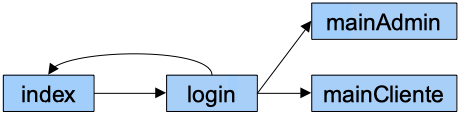
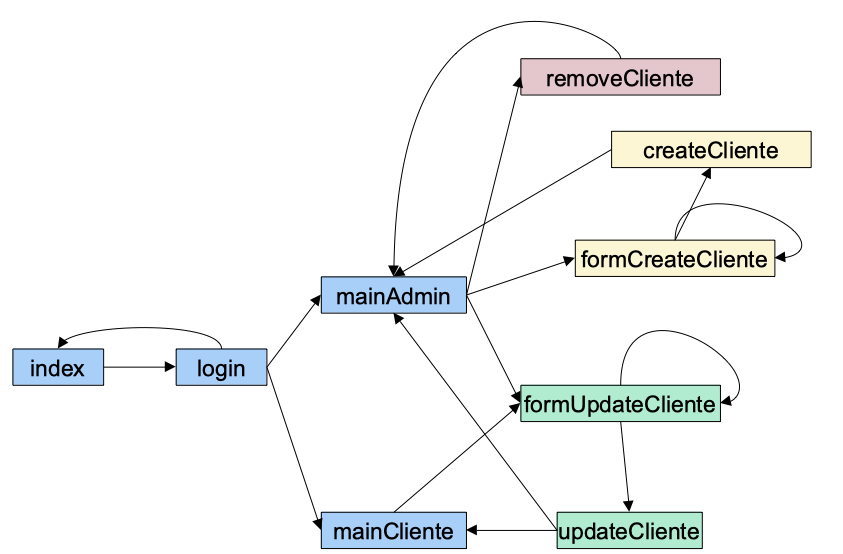

Inicio
Actividad 401
401server.php: igual que el ejemplo visto en los apuntes muestra los valores de$_SERVERal ejecutar un script en tu ordenador.- Prueba a pasarle parámetros (p.e. nombre y apellidos) por GET desde
401get.html. - En otro ejemplo
401getNada.htmlno le pases ningún parámetro. -
Prepara un formulario (
401post.html) que haga un envío por POST (p.e. nombre y apellidos) y compruébalo de nuevo. -
Crea una página (
401enlace.html) que tenga un enlace a401server.phpy comprueba el valor deHTTP_REFERER.
Formularios
Actividad 402
402formulario.html y 402formulario.php: Crea un formulario que solicite:
- Nombre y apellidos.
- Email.
- URL página personal.
- Sexo (radio).
- Número de convivientes en el domicilio.
- Aficiones (checkboxes) – poner mínimo 4 valores.
- Menú favorito (lista selección múltiple) – poner mínimo 4 valores.
Muestra los valores cargados en una tabla-resumen.
Actividad 403
403validacion.php: a partir del formulario anterior, introduce validaciones en HTML mediante el atributo required de los campos (usa también los tipos adecuados para cada campo), y comprueba los tipos de los datos y que cumplen los valores esperados (por ejemplo, en los checkboxes que los valores recogidos forman parte de todos los posibles).
Prueba a pasarle datos erroneos via URL y comprobar su comportamiento.
Nota
Investiga el uso de la función filter_var.
Actividad 404
404subida.html y 404subida.php: crea un formulario que permita subir un archivo al servidor. Además del fichero, debe pedir en el mismo formulario dos campos numéricos que soliciten la anchura y la altura. Comprueba que tanto el fichero como los datos llegan correctamente.
Actividad 405
405subidaImagen.php: modifica el ejercicio anterior para que únicamente permita subir imágenes (comprueba la propiedad type del archivo subido). Si el usuario selecciona otro tipo de archivos, se le debe informar del error y permitir que suba un nuevo archivo.
En el caso de subir el tipo correcto, visualizar la imagen con el tamaño de anchura y altura recibido como parámetro.
Cookies y sesión
Actividad 406
406contadorVisitas.php: Mediante el uso de cookies, informa al usuario de si es su primera visita, o si no lo es, muestre su valor (valor de un contador). Además, debes permitir que el usuario reinicialice su contador de visitas.
Actividad 407
407fondo.php: Mediante el uso de cookies, crea una página con un desplegable con varios colores, de manera que el usuario pueda cambiar el color de fondo de la página (atributo bgcolor). Al cerrar la página, ésta debe recordar, al menos durante 24h, el color elegido y la próxima vez que se cargue la pagina, lo haga con el último color seleccionado.
Actividad 408
408fondoSesion1.php: Modifica el ejercicio anterior para almacenar el color de fondo en la sesión y no emplear cookies. Además, debe contener un enlace al siguiente archivo.
408fondoSesion2.php: Debe mostrar el color y dar la posibilidad de:
- volver a la página anterior mediante un enlace
- y mediante otro enlace, vaciar la sesión y volver a la página anterior.
Actividad 409
Haciendo uso de la sesión, vamos a dividir el formulario del ejercicio 402formulario.php en 2 subformularios:
409formulario1.phpenvía los datos (nombre y apellidos, email, url y sexo) a409formulario2.php.409formulario2.phplee los datos y los mete en la sesión. A continuación, muestra el resto de campos del formulario a rellenar (convivientes, aficiones y menú). Envía estos datos a409formulario3.php.409formulario3.phprecoge los datos enviados en el paso anterior y junto a los que ya estaban en la sesión, se muestran todos los datos en una tabla/lista desordenada.
Autenticación
En los siguientes ejercicios vamos a montar una estructura de inicio de sesión similar a la vista en los apuntes.
Actividad 410
410index.php: formulario de inicio de sesión
Actividad 411
411login.php: hace de controlador, por lo que debe comprobar los datos recibidos (solo permite la entrada de usuario / usuario y si todo es correcto, ceder el control a la vista del siguiente ejercicio. No contiene código HTML.
Actividad 412
412peliculas.php: vista que muestra como título "Listado de Películas", y una lista desordenada con tres películas.
Actividad 413
413logout.php: vacía la sesión y nos lleva de nuevo al formulario de inicio de sesión. No contiene código HTML
Actividad 414
414series.php: Añade un nueva vista similar a 412peliculas.php que muestra un "Listado de Series" con una lista desordenada con tres series. Tanto 412pelicuas.php como la vista recien creadas, deben tener un pequeño menú (sencillo, mediante enlaces) que permita pasar de un listado a otro. Comprueba que si se accede directamente a cualquiera de las vistas sin tener un usuario logueado via URL del navegador, no se muestra el listado.
Actividad 415
Modifica tanto el controlador como las vistas para que:
- los datos los obtenga el controlador (almacena en la sesión un array de películas y otro de series)
- coloca los datos en la sesión
- En las vistas, los datos se recuperan de la sesión y se pintan en la lista desordenada recorriendo el array correspondiente.
Proyecto Videoclub 3.0
Actividad 420
Para el Videoclub, vamos a crear una página index.php con un formulario que contenga un formulario de login/password. Se comprobarán los datos en login.php. Los posibles usuarios son admin/admin o usuario/usuario
- Si el usuario es correcto, en
main.phpmostrar un mensaje de bienvenida con el nombre del usuario, junto a un enlace para cerrar la sesión, que lo llevaría de nuevo al login. - Si el usuario es incorrecto, debe volver a cargar el formulario dando información al usuario de acceso incorrecto.
Actividad 421
Si el usuario es administrador, se cargarán en la sesión los datos de soportes y clientes del videoclub que teníamos en nuestras pruebas. En la siguiente unidad los obtendremos de la base de datos. En mainAdmin.php, además de la bienvenida, debe mostrar:
- Listado de clientes
- Listado de soportes
Actividad 422
Vamos a modificar la clase Cliente para almacenar el user y la password de cada cliente. Tras codificar los cambios, modificar el listado de clientes de mainAdmin.php para añadir al listado el usuario.
Actividad 423
Si el usuario que accede no es administrador y coincide con alguno de los clientes que tenemos cargados tras el login, debe cargar mainCliente.php donde se mostrará un listado de los alquileres del cliente. Para ello, modificaremos la clase Cliente para ofrecer el método getAlquileres() : array, el cual llamaremos y luego recorreremos para mostrar el listado solicitado.

Ahora volvemos a la parte de administración:
Actividad 424
Además de mostrar el listado de clientes, vamos a ofrecer la opción de dar de alta a un nuevo cliente en formCreateCliente.php. Los datos se enviarán mediante POST a createCliente.php que los introducirá en la sesión. Una vez creado el cliente, debe volver a cargar mainAdmin.php donde se podrá ver el cliente insertado. Si hay algún dato incorrecto, debe volver a cargar el formulario de alta.
Actividad 425
Crea en formUpdateCliente.php un formulario que permita editar los datos de un cliente. Debes recoger los datos en updateCliente.php Los datos de cliente se deben poder modificar desde la propia página de un cliente, así como desde el listado del administrador.
Actividad 426
Desde el listado de clientes del administrador debes ofrecer la posibilidad de borrar un cliente. En el navegador, antes de redirigir al servidor, el usuario debe confirmar mediante JS que realmente desea eliminar al cliente. Finalmente, en removeCliente.php elimina al cliente de la sesión. Una vez eliminado, debe volver al listado de clientes.
